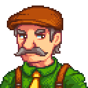
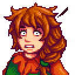
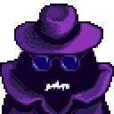

An unbias rating of each stardew valley character, based on:
Quality of dialogue
Character Graphics
Favourite Items
Haley
Score: 4.8
Haley is known to have a negative reputation, on Stardew Valley, as being a particularly judgemental character. This means her quality of dialogue scores low as you feel insecure and unmotivated after a converstaion with her. Her favourite items can be difficult to obtain, she is a fussy character. One of her redeaming qualities is the summery look of her character art, bumping her score to 4.8
Shane
Score: 7.2
Shane is certainly a character that requires patience from the player. However, once you gain friendship with Shane some heartwarming scenes will follow. Therefore, Shane's quality of dialogue is rated high. His item rating is above average, beer is easy to obtain from the stardrop saloon, though it comes with a guilt factor. His art is mid level, fairly boring to look at giving him an overall score of 7.2.
Mayor Lewis

Score 4.2
Mayor Lewis is certainly a much more difficult character to rate. He has a wide range of flaws and redeeming qualities as he is such a prominent figure in the village. I would give his dialogue rating a low score personally, he is repetitive due to how often you must talk to him, in events etc. He is also known to sneak onto your farm in the dead of night every night and steal from your bins In terms of favourite items, Lewis is a man of many pleasures, with chilli peppers beig one of the most accessible. Finally, you have to give credit to the character art, Mayor Lewis is adorned with a very diverse range of facial expressions.
Marnie

Score 8.4
Continuing on a completely unbiased note, we have the fabulous Marnie. Given, the quality of Marnie's dialogue does leave something to be desired, but it is always a wholesome experience. She is the closest villager to your farm, keeps your livestock alive in the winter and is always truly happy to see you! In terms of favourite items, Marnie is quite satisfied with a single large egg, making her the perfect villager for the chicken rancher. Her character art is warm autumnal colours that really embody the cosy town feeling of the game. Marnie we love you.
Krobus

Score 9.2
Sewer rat Krobus is one of the more mysterious characters on Stardew Valley, with his introduction being fairly late in the game. He is a misjudged soul and is a beautiful embodiemont of the slimy, introvert that lives inside us all. Krobus' dialogue is beautiful and culturally fulfilling. His likes are akin to the legend that he is, ranging from refined quartz to gold bars. Finally, his character art has a simple, majestic beauty that deserves nothing but the highest praise!